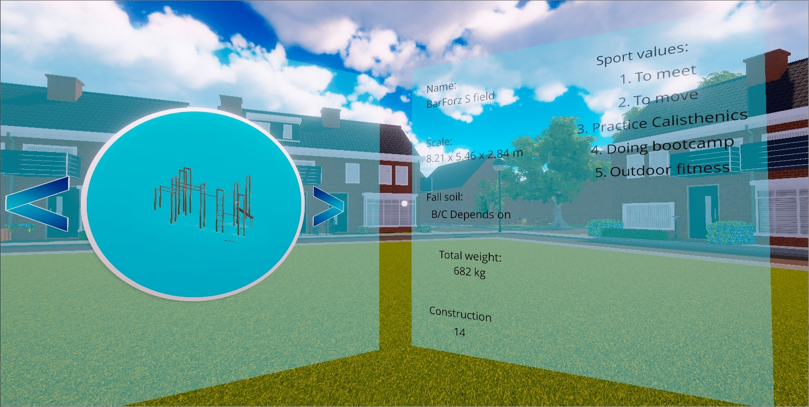
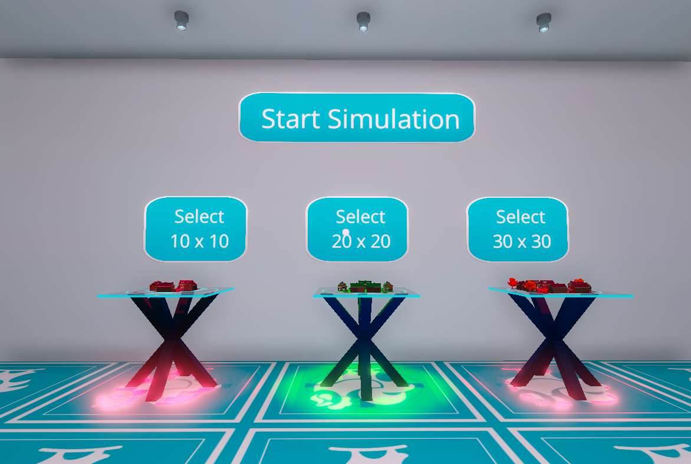

The Project itself
The project started with the Dutch company "IJslander B.V." giving our school the assignment to develop an application in VR allowed the user to be put in a realistic environment with the ability to place and observe playground-equipment which the company is selling.
My contribution to the project
- Gridsystem
- Teleportation
- Object Properties
- Level Selection
Gridsystem
To make our environments more adjustable to certain restrictions such as trees or bushes, I created a gridsystem that allows the user to 'paint' the area on which objects can be placed. The user has a few options such as brush type, brush size and whether to paint or remove. The system is made so that it automatically recognizes the edges and bakes them as 'borders' which will be visually presented to the user to indicate where users can and cannot place objects.
Teleportation
Getting around in VR is quite different from moving in regular video games. Most people will experience motion sickness with smooth movement. This is because your eyes see that you're moving but your legs stand still on the ground which confused the brain and causes this feeling. To solve this I made a teleportation system. The player can use the triggers on the controllers to move around. If the player squeezes the triggers slightly an indicator will show at the targeted location. If the player is able to teleport to the targeted location there will be visual feedback. Feedback plays a very important role, especially to users who aren't experienced with VR at all. Upon squeezing the trigger fully, the player will quickly teleport to the targeted location. Because teleportation is nearly instant. Your eyes don't think you acutally moved which prevents motion sickness.

Object Properties
The CEO of the company also wanted to us to create a system where every model would have certain properties such as : Size(Length,width,height), Color, meterial, ground material, time it takes to build. Together with my team we created an universal system that could be applied to every object. It's simple to make changes as every variable has already been created and can be used if needed. We wanted to make the system easy to use so that even employees of the company, who have never worked with Unity would be able to use the system. This proved to be a great success which greatly reduced the amount of time needed to implement new models.
Level Selection
Since we have multiple scenes, we needed an easy way for the user to select a level to work in. We did this by creating a level-selection scene where all of our templates would be displayed. The users can simply point at a template and press the trigger. This will highlight the template with a green color indicating that they've selected that template. Others would be colored red indicating that those templates are not selected. We chose to do this because green is seen as a "Friendly" color as opposed to red which is seen as a "Hostile" color. Upon selecting a template the player can simply press the big button that reads "Start simulation" to load the simulation.
